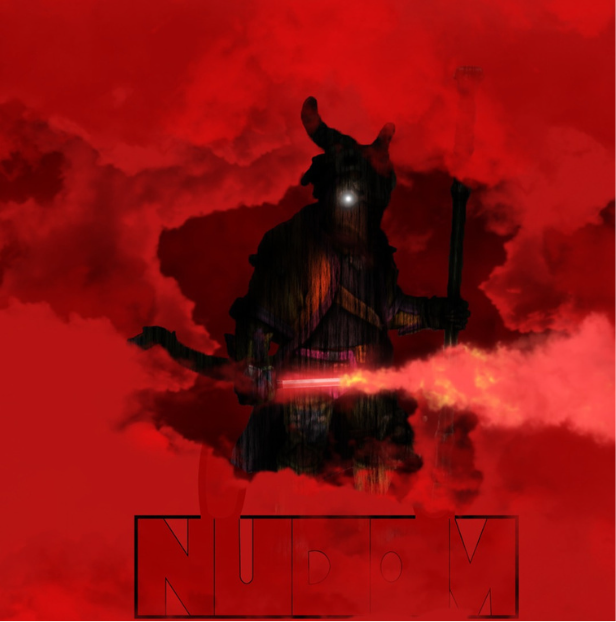

Recomendações dos Usuários
Mas como ainda nao temos recomendações, fique com a seleçao de editor e conheca...
UM FRAGMENTO DO UNIVERSO AUTORAL FEITO PELO MIGUEL
NUDOM é uma história de Mistério e ficção cientifica, onde o mundo não é só habitado por humanos, mas também por criaturas, essas que foram banidas da sociedade e perderam o seu direito de conviver junto dos humanos. A história gira em torno dos personagens Robert, Mara, Auro e Vaul, criaturas que vivem na organização A.R.S.F.E. tal organização que cuida dos oprimidos.
A saga ainda em criação
apresenta nos eventos da primeira parte, uma onda de assassinatos começa, cabe a organização e aos protagonistas desvendarem quem está por trás disso, enquanto acabam fazendo inimigos e aliados durante a aventura. GENERO: ficção científica e mistério.
